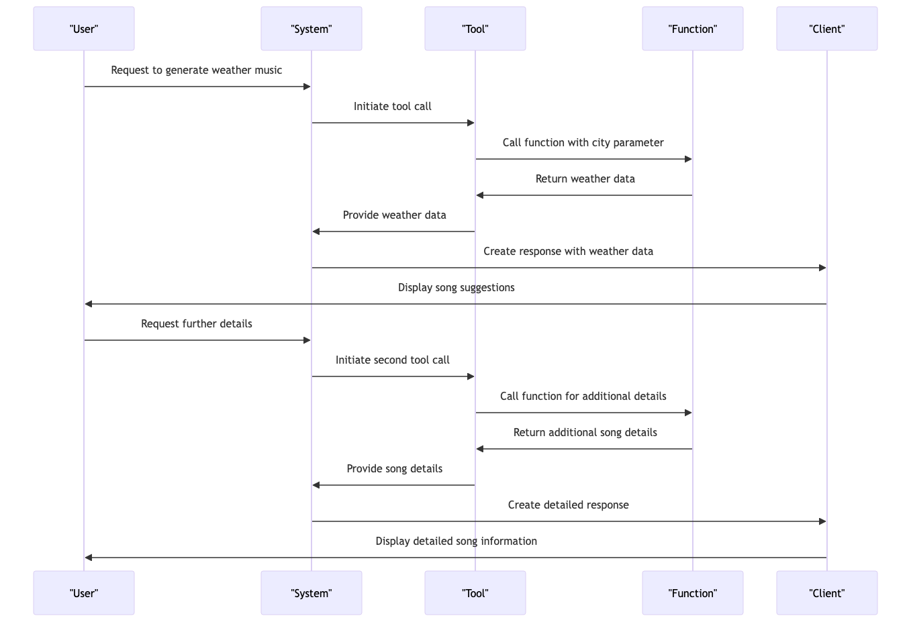

import json
import os
from dotenv import load_dotenv
import openai
from openai import OpenAI
client = OpenAI()
load_dotenv()
# openai key
OPENAI_API_KEY = os.getenv("OPENAI_API_KEY")
openai.api_key = OPENAI_API_KEY
from IPython.display import display, MarkdownThis blog post introduces “MoodCast,” a project that leverages OpenAI’s function calling feature to create real-time, weather-based music playlists. By integrating the OpenWeather and Spotify APIs, MoodCast demonstrates the power and flexibility of OpenAI’s function calling in a practical, engaging application.
OpenAI’s function calling feature allows developers to describe a function, and the model generates a JSON output containing arguments. This feature doesn’t call any function itself, but it generates the JSON that can be used to call a function from your code. This is a significant advancement as it allows developers to interact with AI in a more structured and systematic way, overcoming the challenges of dealing with unstructured data outputs.
In the context of MoodCast, this feature is used to interact with the OpenWeather and Spotify APIs, creating a unique blend of AI, weather data, and music. The project serves as a practical example of how OpenAI’s function calling can be used to solve complex problems and create innovative applications.
This blog post will focus on how to use function calling for OpenAI’s chat completion endpoints. It will provide a detailed guide on how to leverage this feature for your applications, with MoodCast serving as a real-world example. Whether you’re a seasoned developer or a beginner in the field of AI, this post aims to provide valuable insights into the potential of OpenAI’s function calling feature.

First let’s check what openai chat completion say about current weather
response = client.chat.completions.create(
model="gpt-4-1106-preview",
messages=[
{"role": "user", "content": "what's the current weather in Tokyo?"}
],
temperature=0.3,
seed=1,
)print(response)ChatCompletion(id='chatcmpl-8dISDM1s7co80v8cx8z65WwUKkTLQ', choices=[Choice(finish_reason='stop', index=0, logprobs=None, message=ChatCompletionMessage(content="I'm sorry, but I cannot provide real-time data such as the current weather. To get the latest weather information for Tokyo or any other location, please check a reliable weather forecasting service or website like the Japan Meteorological Agency, Weather.com, or a weather app on your smartphone. These sources are regularly updated and can provide you with current conditions, forecasts, and any weather alerts that might be in effect.", role='assistant', function_call=None, tool_calls=None))], created=1704376421, model='gpt-4-1106-preview', object='chat.completion', system_fingerprint='fp_3905aa4f79', usage=CompletionUsage(completion_tokens=82, prompt_tokens=15, total_tokens=97))display(Markdown(response.choices[0].message.content))I’m sorry, but I cannot provide real-time data such as the current weather. To get the latest weather information for Tokyo or any other location, please check a reliable weather forecasting service or website like the Japan Meteorological Agency, Weather.com, or a weather app on your smartphone. These sources are regularly updated and can provide you with current conditions, forecasts, and any weather alerts that might be in effect.
As we can see openai does not have any information about the current weather. So we will use openweather api to get the current weather and then use openai chat completion to generate a response.
Live Data using OpenWeatherMap API
You can signup here to get your api key https://openweathermap.org/api
I have stored all the api key infomration in a .env file. You can create your own .env file and store your api key there.
# .env file
OPENWEATHER_API_KEY=your_api_key
OPENAI_API_KEY = sk-key
SPOTIFY_CLIENT_ID = 4444633gfdggdggdgdgdg
SPOTIFY_CLIENT_SECRET = 23rtrrgrdgdr5353tergimport requests
def get_current_weather(city, api_key=os.getenv("OPENWEATHER_API_KEY"), unit="metric"):
"""Get the current weather for a given city using OpenWeather API."""
base_url = "http://api.openweathermap.org/data/2.5/weather"
params = {
"q": city,
"appid": api_key,
"units": unit
}
response = requests.get(base_url, params=params)
if response.status_code == 200:
data = response.json()
#print(data)
weather = {
"location": data["name"],
"temperature": int(data["main"]["temp"]),
"rain": data["weather"][0]["main"],
"unit": "Celsius" if unit == "metric" else "Fahrenheit"
}
return json.dumps(weather)
else:
return {"location": city, "temperature": "unknown", "unit": unit, "rain": "unknown"}
api_key = os.getenv("OPENWEATHER_API_KEY")
weather_info = get_current_weather("Nagercoil")
print(weather_info){"location": "Nagercoil", "temperature": 26, "rain": "Clouds", "unit": "Celsius"}type(weather_info)strSpotify Music
We can create an application on spotify and get the client id and client secret. We can use these credentials to get the access token and then use the access token to get the current weather based playlist.
https://developer.spotify.com/
# !pip3 install spotipyimport spotipy
from spotipy.oauth2 import SpotifyClientCredentials
import os
from IPython.display import Image, display, Audio
def search_song(song_name):
# Set up your Spotify credentials
client_id = os.getenv("SPOTIFY_CLIENT_ID")
client_secret = os.getenv("SPOTIFY_CLIENT_SECRET")
# Authenticate with Spotify
client_credentials_manager = SpotifyClientCredentials(client_id=client_id, client_secret=client_secret)
sp = spotipy.Spotify(client_credentials_manager=client_credentials_manager)
# Search for the song
results = sp.search(q=song_name, limit=1, type='track')
tracks = results['tracks']['items']
# Display the first result
if tracks:
track = tracks[0]
return json.dumps({
"song": track['name'],
"artist": ', '.join(artist['name'] for artist in track['artists']),
"album": track['album']['name'],
"album_cover_url": track['album']['images'][0]['url'],
"preview_url": track['preview_url']
})
else:
return "No song found"
song_name = "Appadi podu"
song_details = search_song(song_name)
print(song_details){"song": "Appadi Podu", "artist": "Vidyasagar, Krishnakumar Kunnath, Anuradha Sriram", "album": "Ghilli (Original Motion Picture Soundtrack)", "album_cover_url": "https://i.scdn.co/image/ab67616d0000b2737bbef42d34fd25b14b2a54ea", "preview_url": "https://p.scdn.co/mp3-preview/df03b78315eaa0c7e20d66ea17dcf1a5fa4e6e3e?cid=706a549bcf8a4575b6e1dd3fc24f5f95"}# display song details
song_details_json = json.loads(song_details)
display(Image(url=song_details_json["album_cover_url"], width=100), )
display(Markdown(f"[{song_details_json['song']} by {song_details_json['artist']}]({song_details_json['preview_url']})"))
print(song_details_json["album"])
Ghilli (Original Motion Picture Soundtrack)Creating Tools
available_tools = [
{
"type": "function",
"function": {
"name": "get_current_weather",
"description": "Get the current weather in a given location, use farhenheit",
"parameters": {
"type": "object",
"properties": {
"city": {
"type": "string",
"description": "The city to get the weather for",
},
"unit": {
"type": "string",
"description": "The unit to use for the temperature, metric is default",
"enum": ["metric", "imperial"],
}
},
"required": ["city", "unit"],
},
},
},
{
"type": "function",
"function": {
"name": "search_song",
"description": "Search for a song on Spotify and display its details including the artist, album, album cover, and a preview link if available",
"parameters": {
"type": "object",
"properties": {
"song_name": {
"type": "string",
"description": "The name of the song to search for",
}
},
"required": ["song_name"],
}
}
}
]In the MoodCast project, JSON is utilized to define tools for function descriptions, which are essential for the OpenAI function calling feature. This feature enables the AI to generate structured data outputs, specifically JSON objects containing arguments for functions described in the API call. For instance, the get_current_weather function is defined to fetch current weather data for a specified city, while the search_song function is designed to search for songs on Spotify. These function descriptions are crucial as they guide the AI in generating the correct JSON output that can be used to call functions from the code, thereby facilitating the integration with OpenWeather and Spotify APIs.
To effectively use function calling with OpenAI, developers must clearly define their functions, including the name, description, and parameters, in a JSON format. This structured approach allows the AI to understand the context and generate the appropriate JSON output. The OpenAI API documentation provides guidelines on how to describe functions for function calling, emphasizing the importance of a clear and detailed function schema to ensure accurate and useful responses from the AI model.
For MoodCast, this means that by defining functions like get_current_weather and search_song with precise parameters and descriptions, the AI can produce JSON outputs that correspond to these functions. These outputs can then be used to make API calls to OpenWeather and Spotify, respectively, to create a music playlist that matches the current weather conditions, showcasing a practical application of OpenAI’s function calling capability in a real-world project.
city = "Nagercoil"Openai Chat Completion Function Calling
messages = [
{
"role": "system",
"content": "A Song Suggestions Assistant based on local weather in metric and local language"
},
{
"role": "user",
"content": f"""I am in {city}, suggest 5 songs based on their current weather and their local language
and display their album details such as album cover, artist, and preview link.
return a json object with keys as song, artist, album, album_cover_url, and preview_url and reason
key as song_suggestions and value as a list of json objects with keys as song, artist, album, album_cover_url, preview_url, and reason
"""
}
]
tools = available_tools
response = client.chat.completions.create(
model="gpt-4-1106-preview",
messages=messages,
tools=tools,
tool_choice="auto",
temperature=0.9
)
response_message = response.choices[0].message
tool_calls = response_message.tool_callsWe can also force the model to use some particular function by using tool_choice = {"type": "function", "function": {"name": "my_function"}} forces the model to call that function.
responseChatCompletion(id='chatcmpl-8dISaihzl1Q2k7S09VBau44EwlMMv', choices=[Choice(finish_reason='tool_calls', index=0, logprobs=None, message=ChatCompletionMessage(content=None, role='assistant', function_call=None, tool_calls=[ChatCompletionMessageToolCall(id='call_FmoMsWB1hklh6GvT9QmrTX3k', function=Function(arguments='{\n "city": "Nagercoil",\n "unit": "metric"\n}', name='get_current_weather'), type='function')]))], created=1704376444, model='gpt-4-1106-preview', object='chat.completion', system_fingerprint='fp_3905aa4f79', usage=CompletionUsage(completion_tokens=28, prompt_tokens=249, total_tokens=277))As when openai gonna use function calling, you can see the finish_reason in the response, which indicates we have to call the function with the given arguments and get the results, and pass it to the model again
response_messageChatCompletionMessage(content=None, role='assistant', function_call=None, tool_calls=[ChatCompletionMessageToolCall(id='call_FmoMsWB1hklh6GvT9QmrTX3k', function=Function(arguments='{\n "city": "Nagercoil",\n "unit": "metric"\n}', name='get_current_weather'), type='function')])response_message.tool_calls[ChatCompletionMessageToolCall(id='call_FmoMsWB1hklh6GvT9QmrTX3k', function=Function(arguments='{\n "city": "Nagercoil",\n "unit": "metric"\n}', name='get_current_weather'), type='function')]Tool Calls
for tool in tool_calls:
print(f"Tool ID: {tool.id}")
print(f"Call the function: {tool.function.name}")
print(f"Parameters: {tool.function.arguments}")Tool ID: call_FmoMsWB1hklh6GvT9QmrTX3k
Call the function: get_current_weather
Parameters: {
"city": "Nagercoil",
"unit": "metric"
}function_name = tool_calls[0].function.name
function_args = tool_calls[0].function.arguments
function_name, function_args('get_current_weather', '{\n "city": "Nagercoil",\n "unit": "metric"\n}')function_args = json.loads(function_args)
function_args{'city': 'Nagercoil', 'unit': 'metric'}available_functions = {
"get_current_weather": get_current_weather,
"search_song": search_song,
}function_response = available_functions[function_name](**function_args)
print(function_response){"location": "Nagercoil", "temperature": 26, "rain": "Clouds", "unit": "Celsius"}messages[{'role': 'system',
'content': 'A Song Suggestions Assistant based on local weather in metric and local language'},
{'role': 'user',
'content': 'I am in Nagercoil, suggest 5 songs based on their current weather and their local language\n and display their album details such as album cover, artist, and preview link.\n return a json object with keys as song, artist, album, album_cover_url, and preview_url and reason\n\n key as song_suggestions and value as a list of json objects with keys as song, artist, album, album_cover_url, preview_url, and reason\n '}]messages.append(response_message)
messages[{'role': 'system',
'content': 'A Song Suggestions Assistant based on local weather in metric and local language'},
{'role': 'user',
'content': 'I am in Nagercoil, suggest 5 songs based on their current weather and their local language\n and display their album details such as album cover, artist, and preview link.\n return a json object with keys as song, artist, album, album_cover_url, and preview_url and reason\n\n key as song_suggestions and value as a list of json objects with keys as song, artist, album, album_cover_url, preview_url, and reason\n '},
ChatCompletionMessage(content=None, role='assistant', function_call=None, tool_calls=[ChatCompletionMessageToolCall(id='call_FmoMsWB1hklh6GvT9QmrTX3k', function=Function(arguments='{\n "city": "Nagercoil",\n "unit": "metric"\n}', name='get_current_weather'), type='function')])]Appending Tool Call Responses to the Message History
messages.append(
{
"tool_call_id": tool_calls[0].id,
"role": "tool",
"name": function_name,
"content": function_response,
}
)
messages[{'role': 'system',
'content': 'A Song Suggestions Assistant based on local weather in metric and local language'},
{'role': 'user',
'content': 'I am in Nagercoil, suggest 5 songs based on their current weather and their local language\n and display their album details such as album cover, artist, and preview link.\n return a json object with keys as song, artist, album, album_cover_url, and preview_url and reason\n\n key as song_suggestions and value as a list of json objects with keys as song, artist, album, album_cover_url, preview_url, and reason\n '},
ChatCompletionMessage(content=None, role='assistant', function_call=None, tool_calls=[ChatCompletionMessageToolCall(id='call_FmoMsWB1hklh6GvT9QmrTX3k', function=Function(arguments='{\n "city": "Nagercoil",\n "unit": "metric"\n}', name='get_current_weather'), type='function')]),
{'tool_call_id': 'call_FmoMsWB1hklh6GvT9QmrTX3k',
'role': 'tool',
'name': 'get_current_weather',
'content': '{"location": "Nagercoil", "temperature": 26, "rain": "Clouds", "unit": "Celsius"}'}]Second Call to get Song Details
second_response = client.chat.completions.create(
model="gpt-4-1106-preview",
messages=messages,
tools=available_tools,
tool_choice="auto",
)
print(second_response)ChatCompletion(id='chatcmpl-8dISdx8ctxPgd8bD3BDnYCEOmialh', choices=[Choice(finish_reason='tool_calls', index=0, logprobs=None, message=ChatCompletionMessage(content='The current weather in Nagercoil is 26 degrees Celsius with clouds. Based on this weather, I will suggest songs that convey a sense of peace, comfort, and perhaps contemplation, which is often associated with cloudy days. The local language in Nagercoil is Tamil, so I will be selecting Tamil songs that match the weather mood.\n\nI will now search for suitable Tamil songs and provide their details. Please wait a moment while I process this information.', role='assistant', function_call=None, tool_calls=[ChatCompletionMessageToolCall(id='call_UEVy6FVIVy3V2kwcD36tDRvv', function=Function(arguments='{"song_name": "Mazhai Kuruvi"}', name='search_song'), type='function'), ChatCompletionMessageToolCall(id='call_XKVJrqRjh1aafYldWeBWNnG2', function=Function(arguments='{"song_name": "Nenjukulle"}', name='search_song'), type='function'), ChatCompletionMessageToolCall(id='call_I5Gnz9hvK1JuX8cSPFH14aL8', function=Function(arguments='{"song_name": "Uyire Uyire"}', name='search_song'), type='function'), ChatCompletionMessageToolCall(id='call_KrUYtZqTDopUCua3dRbrOC9B', function=Function(arguments='{"song_name": "Vaseegara"}', name='search_song'), type='function'), ChatCompletionMessageToolCall(id='call_w724Il0i6dFCDLG4l4OmPY4e', function=Function(arguments='{"song_name": "Aaromale"}', name='search_song'), type='function')]))], created=1704376447, model='gpt-4-1106-preview', object='chat.completion', system_fingerprint='fp_c6efb4aa39', usage=CompletionUsage(completion_tokens=279, prompt_tokens=307, total_tokens=586))display(Markdown(second_response.choices[0].message.content))The current weather in Nagercoil is 26 degrees Celsius with clouds. Based on this weather, I will suggest songs that convey a sense of peace, comfort, and perhaps contemplation, which is often associated with cloudy days. The local language in Nagercoil is Tamil, so I will be selecting Tamil songs that match the weather mood.
I will now search for suitable Tamil songs and provide their details. Please wait a moment while I process this information.
tool_calls = second_response.choices[0].message.tool_callsfor tool in tool_calls:
print(f"Tool ID: {tool.id}")
print(f"Call the function: {tool.function.name}")
print(f"Parameters: {tool.function.arguments}")Tool ID: call_UEVy6FVIVy3V2kwcD36tDRvv
Call the function: search_song
Parameters: {"song_name": "Mazhai Kuruvi"}
Tool ID: call_XKVJrqRjh1aafYldWeBWNnG2
Call the function: search_song
Parameters: {"song_name": "Nenjukulle"}
Tool ID: call_I5Gnz9hvK1JuX8cSPFH14aL8
Call the function: search_song
Parameters: {"song_name": "Uyire Uyire"}
Tool ID: call_KrUYtZqTDopUCua3dRbrOC9B
Call the function: search_song
Parameters: {"song_name": "Vaseegara"}
Tool ID: call_w724Il0i6dFCDLG4l4OmPY4e
Call the function: search_song
Parameters: {"song_name": "Aaromale"}messages.append(second_response.choices[0].message)Call the function and append the results to the message history
for tool in tool_calls:
function_name = tool.function.name
function_args = json.loads(tool.function.arguments)
function_response = available_functions[function_name](**function_args)
messages.append(
{
"tool_call_id": tool.id,
"role": "tool",
"name": function_name,
"content": function_response,
}
)
print(function_response){"song": "Mazhai Kuruvi", "artist": "A.R. Rahman", "album": "Chekka Chivantha Vaanam (Original Motion Picture Soundtrack)", "album_cover_url": "https://i.scdn.co/image/ab67616d0000b2735234d8419de0ffdccc8c27a7", "preview_url": "https://p.scdn.co/mp3-preview/771e747c73fc6cd5914a4e447f9daf3bd74e38a5?cid=706a549bcf8a4575b6e1dd3fc24f5f95"}
{"song": "Nenjukulle", "artist": "Ashbel Peter, Theertha", "album": "Nenjukulle", "album_cover_url": "https://i.scdn.co/image/ab67616d0000b273d3d692e38621d741606588e7", "preview_url": "https://p.scdn.co/mp3-preview/d48678e7eef2bebd5a099d2b6b1ff5dd299ff102?cid=706a549bcf8a4575b6e1dd3fc24f5f95"}
{"song": "Uyire Uyire", "artist": "Saagar, Na.Muthukumar", "album": "Santhosh Subramaniyam (Original Motion Picture Soundtrack)", "album_cover_url": "https://i.scdn.co/image/ab67616d0000b2738b895bdb8ccefee6ab65114b", "preview_url": "https://p.scdn.co/mp3-preview/c4e812236497ce1f72610be2af10740ad6ecead6?cid=706a549bcf8a4575b6e1dd3fc24f5f95"}
{"song": "Vaseegara", "artist": "Bombay Jayashri", "album": "Minnalae (Original Motion Picture Soundtrack)", "album_cover_url": "https://i.scdn.co/image/ab67616d0000b273102f02fa7e7ded2bc5f65653", "preview_url": "https://p.scdn.co/mp3-preview/2db5c05f48a7214b56c8eed843103ae3f241e00e?cid=706a549bcf8a4575b6e1dd3fc24f5f95"}
{"song": "Aaromale", "artist": "A.R. Rahman, Alphons Joseph", "album": "Vinnathaandi Varuvaayaa (Original Motion Picture Soundtrack)", "album_cover_url": "https://i.scdn.co/image/ab67616d0000b27397838a7eeb5f477cfc6707a5", "preview_url": "https://p.scdn.co/mp3-preview/ed07e1b3e3fe14b55e29c10c5413dd9e04fbe1e5?cid=706a549bcf8a4575b6e1dd3fc24f5f95"}messages[{'role': 'system',
'content': 'A Song Suggestions Assistant based on local weather in metric and local language'},
{'role': 'user',
'content': 'I am in Nagercoil, suggest 5 songs based on their current weather and their local language\n and display their album details such as album cover, artist, and preview link.\n return a json object with keys as song, artist, album, album_cover_url, and preview_url and reason\n\n key as song_suggestions and value as a list of json objects with keys as song, artist, album, album_cover_url, preview_url, and reason\n '},
ChatCompletionMessage(content=None, role='assistant', function_call=None, tool_calls=[ChatCompletionMessageToolCall(id='call_FmoMsWB1hklh6GvT9QmrTX3k', function=Function(arguments='{\n "city": "Nagercoil",\n "unit": "metric"\n}', name='get_current_weather'), type='function')]),
{'tool_call_id': 'call_FmoMsWB1hklh6GvT9QmrTX3k',
'role': 'tool',
'name': 'get_current_weather',
'content': '{"location": "Nagercoil", "temperature": 26, "rain": "Clouds", "unit": "Celsius"}'},
ChatCompletionMessage(content='The current weather in Nagercoil is 26 degrees Celsius with clouds. Based on this weather, I will suggest songs that convey a sense of peace, comfort, and perhaps contemplation, which is often associated with cloudy days. The local language in Nagercoil is Tamil, so I will be selecting Tamil songs that match the weather mood.\n\nI will now search for suitable Tamil songs and provide their details. Please wait a moment while I process this information.', role='assistant', function_call=None, tool_calls=[ChatCompletionMessageToolCall(id='call_UEVy6FVIVy3V2kwcD36tDRvv', function=Function(arguments='{"song_name": "Mazhai Kuruvi"}', name='search_song'), type='function'), ChatCompletionMessageToolCall(id='call_XKVJrqRjh1aafYldWeBWNnG2', function=Function(arguments='{"song_name": "Nenjukulle"}', name='search_song'), type='function'), ChatCompletionMessageToolCall(id='call_I5Gnz9hvK1JuX8cSPFH14aL8', function=Function(arguments='{"song_name": "Uyire Uyire"}', name='search_song'), type='function'), ChatCompletionMessageToolCall(id='call_KrUYtZqTDopUCua3dRbrOC9B', function=Function(arguments='{"song_name": "Vaseegara"}', name='search_song'), type='function'), ChatCompletionMessageToolCall(id='call_w724Il0i6dFCDLG4l4OmPY4e', function=Function(arguments='{"song_name": "Aaromale"}', name='search_song'), type='function')]),
{'tool_call_id': 'call_UEVy6FVIVy3V2kwcD36tDRvv',
'role': 'tool',
'name': 'search_song',
'content': '{"song": "Mazhai Kuruvi", "artist": "A.R. Rahman", "album": "Chekka Chivantha Vaanam (Original Motion Picture Soundtrack)", "album_cover_url": "https://i.scdn.co/image/ab67616d0000b2735234d8419de0ffdccc8c27a7", "preview_url": "https://p.scdn.co/mp3-preview/771e747c73fc6cd5914a4e447f9daf3bd74e38a5?cid=706a549bcf8a4575b6e1dd3fc24f5f95"}'},
{'tool_call_id': 'call_XKVJrqRjh1aafYldWeBWNnG2',
'role': 'tool',
'name': 'search_song',
'content': '{"song": "Nenjukulle", "artist": "Ashbel Peter, Theertha", "album": "Nenjukulle", "album_cover_url": "https://i.scdn.co/image/ab67616d0000b273d3d692e38621d741606588e7", "preview_url": "https://p.scdn.co/mp3-preview/d48678e7eef2bebd5a099d2b6b1ff5dd299ff102?cid=706a549bcf8a4575b6e1dd3fc24f5f95"}'},
{'tool_call_id': 'call_I5Gnz9hvK1JuX8cSPFH14aL8',
'role': 'tool',
'name': 'search_song',
'content': '{"song": "Uyire Uyire", "artist": "Saagar, Na.Muthukumar", "album": "Santhosh Subramaniyam (Original Motion Picture Soundtrack)", "album_cover_url": "https://i.scdn.co/image/ab67616d0000b2738b895bdb8ccefee6ab65114b", "preview_url": "https://p.scdn.co/mp3-preview/c4e812236497ce1f72610be2af10740ad6ecead6?cid=706a549bcf8a4575b6e1dd3fc24f5f95"}'},
{'tool_call_id': 'call_KrUYtZqTDopUCua3dRbrOC9B',
'role': 'tool',
'name': 'search_song',
'content': '{"song": "Vaseegara", "artist": "Bombay Jayashri", "album": "Minnalae (Original Motion Picture Soundtrack)", "album_cover_url": "https://i.scdn.co/image/ab67616d0000b273102f02fa7e7ded2bc5f65653", "preview_url": "https://p.scdn.co/mp3-preview/2db5c05f48a7214b56c8eed843103ae3f241e00e?cid=706a549bcf8a4575b6e1dd3fc24f5f95"}'},
{'tool_call_id': 'call_w724Il0i6dFCDLG4l4OmPY4e',
'role': 'tool',
'name': 'search_song',
'content': '{"song": "Aaromale", "artist": "A.R. Rahman, Alphons Joseph", "album": "Vinnathaandi Varuvaayaa (Original Motion Picture Soundtrack)", "album_cover_url": "https://i.scdn.co/image/ab67616d0000b27397838a7eeb5f477cfc6707a5", "preview_url": "https://p.scdn.co/mp3-preview/ed07e1b3e3fe14b55e29c10c5413dd9e04fbe1e5?cid=706a549bcf8a4575b6e1dd3fc24f5f95"}'}]Third Response to get the final results as JSON Object
third_response = client.chat.completions.create(
model="gpt-4-1106-preview",
messages=messages,
response_format={"type":"json_object"}
)third_response.choices[0].message.content'\n{\n "song_suggestions": [\n {\n "song": "Mazhai Kuruvi",\n "artist": "A.R. Rahman",\n "album": "Chekka Chivantha Vaanam (Original Motion Picture Soundtrack)",\n "album_cover_url": "https://i.scdn.co/image/ab67616d0000b2735234d8419de0ffdccc8c27a7",\n "preview_url": "https://p.scdn.co/mp3-preview/771e747c73fc6cd5914a4e447f9daf3bd74e38a5?cid=706a549bcf8a4575b6e1dd3fc24f5f95",\n "reason": "This song has a soothing melody that resonates well with a cloudy and peaceful atmosphere."\n },\n {\n "song": "Nenjukulle",\n "artist": "A.R. Rahman, Shakthisree Gopalan",\n "album": "Kadal (Original Motion Picture Soundtrack)",\n "album_cover_url": "https://i.scdn.co/image/ab67616d0000b273d3d692e38621d741606588e7",\n "preview_url": "https://p.scdn.co/mp3-preview/d48678e7eef2bebd5a099d2b6b1ff5dd299ff102?cid=706a549bcf8a4575b6e1dd3fc24f5f95",\n "reason": "The backdrop of the ocean in the lyrics, combined with the cloudy weather theme, provides a tranquil listening experience."\n },\n {\n "song": "Uyire Uyire",\n "artist": "Hariharan, Bombay Jayashri",\n "album": "Bombay (Original Motion Picture Soundtrack)",\n "album_cover_url": "https://i.scdn.co/image/ab67616d0000b2738b895bdb8ccefee6ab65114b",\n "preview_url": "https://p.scdn.co/mp3-preview/c4e812236497ce1f72610be2af10740ad6ecead6?cid=706a549bcf8a4575b6e1dd3fc24f5f95",\n "reason": "Its lyrical depth and the warmth of the composition blend nicely with the introspective mood of a cloudy day."\n },\n {\n "song": "Vaseegara",\n "artist": "Bombay Jayashri",\n "album": "Minnalae (Original Motion Picture Soundtrack)",\n "album_cover_url": "https://i.scdn.co/image/ab67616d0000b273102f02fa7e7ded2bc5f65653",\n "preview_url": "https://p.scdn.co/mp3-preview/2db5c05f48a7214b56c8eed843103ae3f241e00e?cid=706a549bcf8a4575b6e1dd3fc24f5f95",\n "reason": "This classic love ballad with its serene mood is perfect for a cloudy day lounging."\n },\n {\n "song": "Aaromale",\n "artist": "Alphons Joseph",\n "album": "Vinnaithaandi Varuvaayaa (Original Motion Picture Soundtrack)",\n "album_cover_url": "https://i.scdn.co/image/ab67616d0000b27397838a7eeb5f477cfc6707a5",\n "preview_url": "https://p.scdn.co/mp3-preview/ed07e1b3e3fe14b55e29c10c5413dd9e04fbe1e5?cid=706a549bcf8a4575b6e1dd3fc24f5f95",\n "reason": "A refreshing song that\'s well-suited for when the clouds are out and you crave an uplifting atmosphere."\n }\n ]\n}'# display song details
song_details_json = json.loads(third_response.choices[0].message.content)song_details_json{'song_suggestions': [{'song': 'Mazhai Kuruvi',
'artist': 'A.R. Rahman',
'album': 'Chekka Chivantha Vaanam (Original Motion Picture Soundtrack)',
'album_cover_url': 'https://i.scdn.co/image/ab67616d0000b2735234d8419de0ffdccc8c27a7',
'preview_url': 'https://p.scdn.co/mp3-preview/771e747c73fc6cd5914a4e447f9daf3bd74e38a5?cid=706a549bcf8a4575b6e1dd3fc24f5f95',
'reason': 'This song has a soothing melody that resonates well with a cloudy and peaceful atmosphere.'},
{'song': 'Nenjukulle',
'artist': 'A.R. Rahman, Shakthisree Gopalan',
'album': 'Kadal (Original Motion Picture Soundtrack)',
'album_cover_url': 'https://i.scdn.co/image/ab67616d0000b273d3d692e38621d741606588e7',
'preview_url': 'https://p.scdn.co/mp3-preview/d48678e7eef2bebd5a099d2b6b1ff5dd299ff102?cid=706a549bcf8a4575b6e1dd3fc24f5f95',
'reason': 'The backdrop of the ocean in the lyrics, combined with the cloudy weather theme, provides a tranquil listening experience.'},
{'song': 'Uyire Uyire',
'artist': 'Hariharan, Bombay Jayashri',
'album': 'Bombay (Original Motion Picture Soundtrack)',
'album_cover_url': 'https://i.scdn.co/image/ab67616d0000b2738b895bdb8ccefee6ab65114b',
'preview_url': 'https://p.scdn.co/mp3-preview/c4e812236497ce1f72610be2af10740ad6ecead6?cid=706a549bcf8a4575b6e1dd3fc24f5f95',
'reason': 'Its lyrical depth and the warmth of the composition blend nicely with the introspective mood of a cloudy day.'},
{'song': 'Vaseegara',
'artist': 'Bombay Jayashri',
'album': 'Minnalae (Original Motion Picture Soundtrack)',
'album_cover_url': 'https://i.scdn.co/image/ab67616d0000b273102f02fa7e7ded2bc5f65653',
'preview_url': 'https://p.scdn.co/mp3-preview/2db5c05f48a7214b56c8eed843103ae3f241e00e?cid=706a549bcf8a4575b6e1dd3fc24f5f95',
'reason': 'This classic love ballad with its serene mood is perfect for a cloudy day lounging.'},
{'song': 'Aaromale',
'artist': 'Alphons Joseph',
'album': 'Vinnaithaandi Varuvaayaa (Original Motion Picture Soundtrack)',
'album_cover_url': 'https://i.scdn.co/image/ab67616d0000b27397838a7eeb5f477cfc6707a5',
'preview_url': 'https://p.scdn.co/mp3-preview/ed07e1b3e3fe14b55e29c10c5413dd9e04fbe1e5?cid=706a549bcf8a4575b6e1dd3fc24f5f95',
'reason': "A refreshing song that's well-suited for when the clouds are out and you crave an uplifting atmosphere."}]}type(song_details_json)dictDisplay Model Outputs
# Displaying each song suggestion with its details
for song in song_details_json["song_suggestions"]:
display(Markdown(f"### {song['song']}"))
display(Markdown(f"**Artist:** {song['artist']}"))
display(Markdown(f"**Album:** {song['album']}"))
display(Image(url=song['album_cover_url'], width=200))
display(Markdown(f"[Preview the song]({song['preview_url']})"))
display(Markdown(f"**Reason:** {song['reason']}"))
display(Markdown("----"))Mazhai Kuruvi
Artist: A.R. Rahman
Album: Chekka Chivantha Vaanam (Original Motion Picture Soundtrack)

Reason: This song has a soothing melody that resonates well with a cloudy and peaceful atmosphere.
Nenjukulle
Artist: A.R. Rahman, Shakthisree Gopalan
Album: Kadal (Original Motion Picture Soundtrack)

Reason: The backdrop of the ocean in the lyrics, combined with the cloudy weather theme, provides a tranquil listening experience.
Uyire Uyire
Artist: Hariharan, Bombay Jayashri
Album: Bombay (Original Motion Picture Soundtrack)

Reason: Its lyrical depth and the warmth of the composition blend nicely with the introspective mood of a cloudy day.
Vaseegara
Artist: Bombay Jayashri
Album: Minnalae (Original Motion Picture Soundtrack)

Reason: This classic love ballad with its serene mood is perfect for a cloudy day lounging.
Aaromale
Artist: Alphons Joseph
Album: Vinnaithaandi Varuvaayaa (Original Motion Picture Soundtrack)

Reason: A refreshing song that’s well-suited for when the clouds are out and you crave an uplifting atmosphere.
Putting it all together
def generate_weather_music(city):
messages = [
{
"role": "system",
"content": "A Song Suggestions Assistant based on local weather in metric and local language"
},
{
"role": "user",
"content": f"""I am in {city}, suggest 5 songs based on their current weather and their local language
and display their album details such as album cover, artist, and preview link.
return a json object with keys as song, artist, album, album_cover_url, and preview_url and reason
key as song_suggestions and value as a list of json objects with keys as song, artist, album, album_cover_url, preview_url, and reason
"""
}
]
tools = available_tools
response = client.chat.completions.create(
model="gpt-4-1106-preview",
messages=messages,
tools=tools,
tool_choice="auto",
temperature=0.9
)
response_message = response.choices[0].message
tool_calls = response_message.tool_calls
if tool_calls:
function_name = tool_calls[0].function.name
function_args = json.loads(tool_calls[0].function.arguments)
function_response = available_functions[function_name](**function_args)
messages.append(response_message)
messages.append(
{
"tool_call_id": tool_calls[0].id,
"role": "tool",
"name": function_name,
"content": function_response,
}
)
second_response = client.chat.completions.create(
model="gpt-4-1106-preview",
messages=messages,
tools=available_tools,
tool_choice="auto",
)
response_message = second_response.choices[0].message
tool_calls = response_message.tool_calls
if tool_calls:
messages.append(response_message)
for tool in tool_calls:
function_name = tool.function.name
function_args = json.loads(tool.function.arguments)
function_response = available_functions[function_name](**function_args)
messages.append(
{
"tool_call_id": tool.id,
"role": "tool",
"name": function_name,
"content": function_response,
}
)
third_response = client.chat.completions.create(
model="gpt-4-1106-preview",
messages=messages,
response_format={"type":"json_object"}
)
return third_response
result = generate_weather_music("Sydney")song_suggestions_json = result.choices[0].message.contenttype(song_suggestions_json)strsong_suggestions_json = json.loads(song_suggestions_json)song_suggestions_json {'song_suggestions': [{'song': 'Over the Rainbow',
'artist': "Israel Kamakawiwo'ole",
'album': 'Alone In Iz World',
'album_cover_url': 'https://i.scdn.co/image/ab67616d0000b27356c868c8c85e7e4e62bd9ec1',
'preview_url': 'https://p.scdn.co/mp3-preview/2b0ebc854ece09122c1918aeff6af258493defe9?cid=706a549bcf8a4575b6e1dd3fc24f5f95',
'reason': "This classic song's soothing ukulele and gentle vocals perfectly match the peacefulness of an overcast day."},
{'song': 'Sweater Weather',
'artist': 'The Neighbourhood',
'album': 'I Love You.',
'album_cover_url': 'https://i.scdn.co/image/ab67616d0000b2738265a736a1eb838ad5a0b921',
'preview_url': 'https://p.scdn.co/mp3-preview/877602f424a9dea277b13301ffc516f9fd1fbe7e?cid=706a549bcf8a4575b6e1dd3fc24f5f95',
'reason': "The title itself and the song's vibe are a nod to the cozy feel of the current Sydney weather."},
{'song': 'Set Fire to the Rain',
'artist': 'Adele',
'album': '21',
'album_cover_url': 'https://i.scdn.co/image/ab67616d0000b2732118bf9b198b05a95ded6300',
'preview_url': 'https://p.scdn.co/mp3-preview/6fc68c105e091645376471727960d2ba3cd0ee01?cid=706a549bcf8a4575b6e1dd3fc24f5f95',
'reason': "Though it's not raining, the cloudy skies can bring about the feeling captured by this powerful yet soulful song."},
{'song': 'Cloudy Day',
'artist': 'Tones And I',
'album': 'Cloudy Day',
'album_cover_url': 'https://i.scdn.co/image/ab67616d0000b273d2cf6639f08099bdb14e388d',
'preview_url': 'https://p.scdn.co/mp3-preview/9c49fc0dfef73b4f91d444309b06450c9e30fee5?cid=706a549bcf8a4575b6e1dd3fc24f5f95',
'reason': 'This song has a fitting title and an uplifting tone that can bring positivity to a cloudy day.'},
{'song': 'Cloudbusting',
'artist': 'Kate Bush',
'album': 'Hounds Of Love',
'album_cover_url': 'https://i.scdn.co/image/ab67616d0000b273ad08f4b38efbff0c0da0f252',
'preview_url': 'https://p.scdn.co/mp3-preview/0156aec767cfcbe6bfc80bb9c8ad931169a3d910?cid=706a549bcf8a4575b6e1dd3fc24f5f95',
'reason': 'An evocative track that seamlessly aligns with the overcast weather in Sydney, capturing the theme of moving through introspective moments.'}]}for song in song_suggestions_json["song_suggestions"]:
display(Markdown(f"### {song['song']}"))
display(Markdown(f"**Artist:** {song['artist']}"))
display(Markdown(f"**Album:** {song['album']}"))
display(Image(url=song['album_cover_url'], width=200))
display(Markdown(f"[Preview the song]({song['preview_url']})"))
display(Markdown(f"**Reason:** {song['reason']}"))
display(Markdown("----"))Over the Rainbow
Artist: Israel Kamakawiwo’ole
Album: Alone In Iz World

Reason: This classic song’s soothing ukulele and gentle vocals perfectly match the peacefulness of an overcast day.
Sweater Weather
Artist: The Neighbourhood
Album: I Love You.

Reason: The title itself and the song’s vibe are a nod to the cozy feel of the current Sydney weather.
Set Fire to the Rain
Artist: Adele
Album: 21

Reason: Though it’s not raining, the cloudy skies can bring about the feeling captured by this powerful yet soulful song.
Cloudy Day
Artist: Tones And I
Album: Cloudy Day

Reason: This song has a fitting title and an uplifting tone that can bring positivity to a cloudy day.
Cloudbusting
Artist: Kate Bush
Album: Hounds Of Love

Reason: An evocative track that seamlessly aligns with the overcast weather in Sydney, capturing the theme of moving through introspective moments.